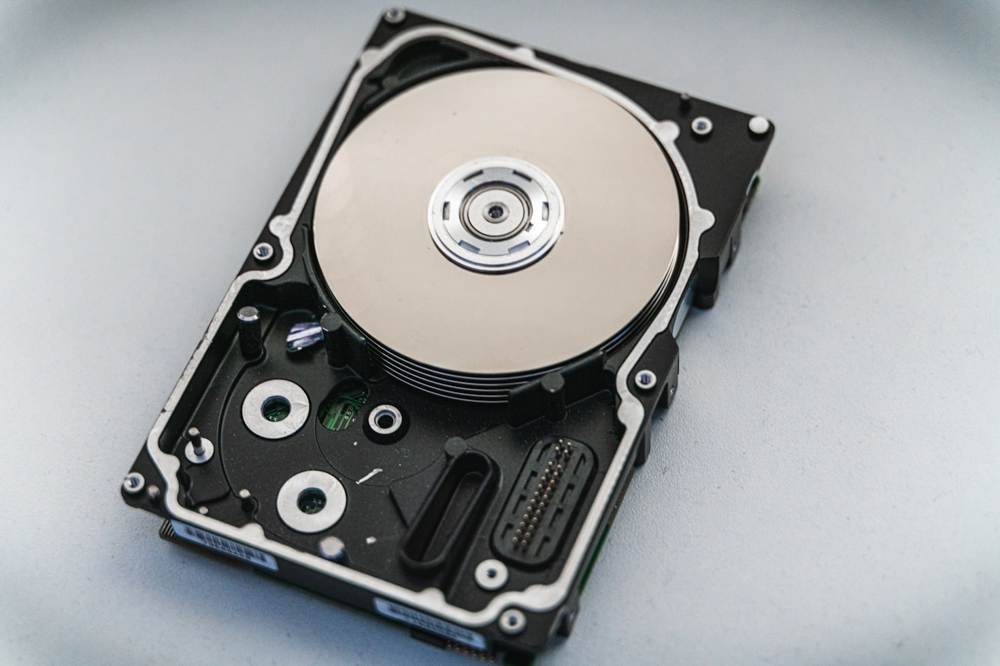
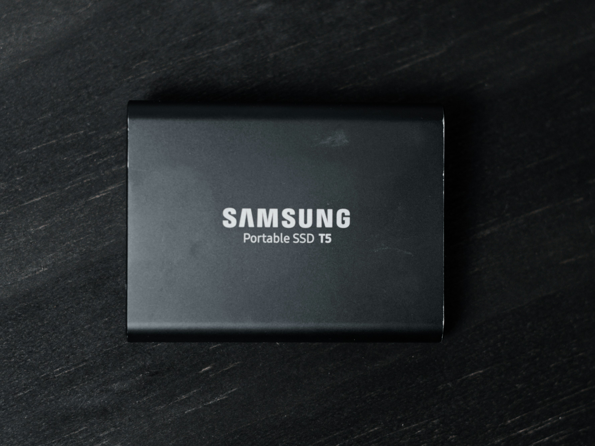

Quelles différences entre un HDD et un SSD ?
Choisir entre un disque HDD ou un SSD sème la confusion pour plusieurs. Vu que les deux assurent le même rôle, la sélection paraît difficile. Quelles sont les principales différences ?
HDD : C'est l'un des plus anciens supports de stockage (le premier modèle a vu le jour en 1956). Ils se fonctionnent en se reposant sur le système soi-disant "mécanique". L'écriture et la lecture des données se font par une tête mobile qui se déplace sur des plateaux tournants.
SSD : Historiquement plus récents, les disques SSD incluent en elles quelques révolutions technologiques importantes. Le stockage de données se fait via la mémoire flash. Il n'y a plus de plateaux tournants ni de tête mobile : tout est électronique.
Ne comportant aucune pièce mobile, les disques SSD ont un énorme avantage en ce qui concerne la vitesse. Ils pourraient atteindre la barre des 3000 Mo/s en lecture et écriture, tandis que les disques HDD ne varient qu'entre 30 et 160 Mo/s. Ces différences sont remarquables dès le démarrage de votre PC : avec un HDD, Windows peut atteindre jusqu'à environ 4 minutes pour se lancer; tandis qu'avec un SSD, ça ne prend que quelques secondes.
PrixÀ la même capacité, un disque HDD est largement moins cher qu'un disque SSD. Pour un espace de 500 go, un disque HDD coûte environ 25 euros, tandis qu'un SSD est aux environs de 60 euros. C'est un avantage du côté des Hard Disk Drive.
Capacité et disponibilitéIl n'y a aucune différence remarquable, sauf qu'un disque SSD volumineux est difficile à trouver. On voit rarement des disques SSD au-delà de 16 To, alors que pour les HDD, presque toutes les marques proposent une telle capacité.
Utilisation et durabilitéVu la présence des pièces mobiles à l'intérieur, les disques HDD sont bruyants ; mais aussi, ils sont sensibles aux chocs. Un risque d'endommagement est fort possible en un tel cas. Quant aux SSD, ils sont totalement silencieux, et aussi plus résistants aux collisions.
Qu'il soit du côté matériel ou logiciel, des différences se présentent entre un Hard Disk Drive et un Solid State Drive. C'est à vous de choisir ce qui correspond le plus à votre besoin. L'idéal, c'est d'avoir les deux : le SSD pour le système et les fichiers courants, et le disque dur HDD pour les données personnelles.